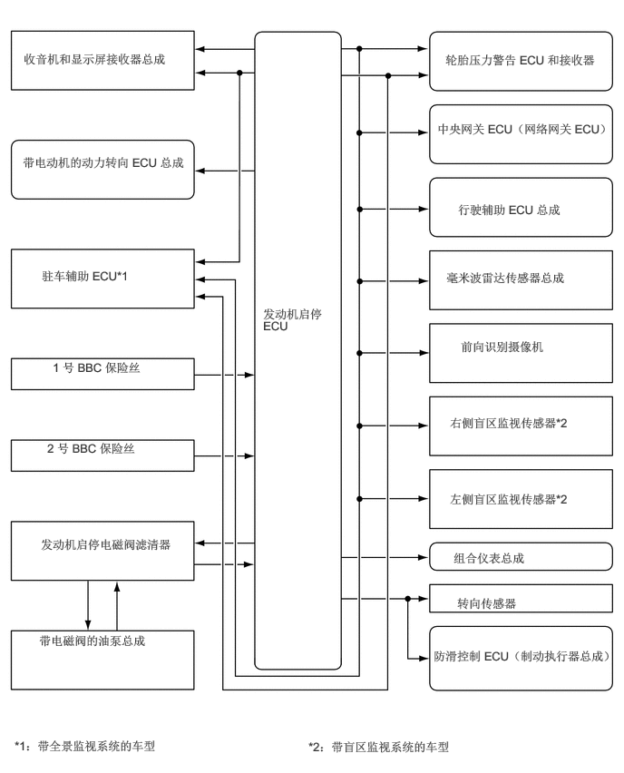

0.271,0.594 1.979,1
1.698,0.396
10
false
收音机和显示屏接收器总成
0.26,1.781 2.302,2.438
2.031,0.646
10
false
带电动机的动力转向 ECU 总成
0.479,3.083 1.958,3.354
1.469,0.26
10
false
驻车辅助 ECU*1
0.604,4.135 1.771,4.375
1.156,0.229
10
false
1 号 BBC 保险丝
0.448,7.271 1.938,7.677
1.479,0.396
10
false
带电磁阀的油泵总成
3.021,3.521 3.833,4.302
0.802,0.771
10
false
发动机启停 ECU
5.115,0.604 6.854,1.01
1.729,0.396
10
false
轮胎压力警告 ECU 和接收器
5.021,1.396 7.167,1.854
2.135,0.448
10
false
中央网关 ECU（网络网关 ECU）
5.26,2.323 6.563,2.76
1.292,0.427
10
false
行驶辅助 ECU 总成
5.125,3.104 7.031,3.594
1.896,0.479
10
false
毫米波雷达传感器总成
5.292,3.896 6.615,4.344
1.313,0.438
10
false
前向识别摄像机
5.167,4.771 6.833,5.354
1.656,0.573
10
false
右侧盲区监视传感器*2
5.167,5.646 6.833,6.229
1.656,0.573
10
false
左侧盲区监视传感器*2
5.208,6.323 7.104,6.615
1.885,0.281
10
false
组合仪表总成
5.25,6.844 6.385,7.104
1.125,0.25
10
false
转向传感器
4.979,7.448 7.115,7.927
2.125,0.469
10
false
防滑控制 ECU（制动执行器总成）
0.167,8.479 3.51,8.75
3.333,0.26
10
false
*1：带全景监视系统的车型
3.542,8.49 6.563,8.76
3.01,0.26
10
false
*2：带盲区监视系统的车型
0.542,5.063 1.708,5.302
1.156,0.229
10
false
2 号 BBC 保险丝
0.469,6.167 2.135,6.708
1.656,0.531
10
false
发动机启停电磁阀滤清器